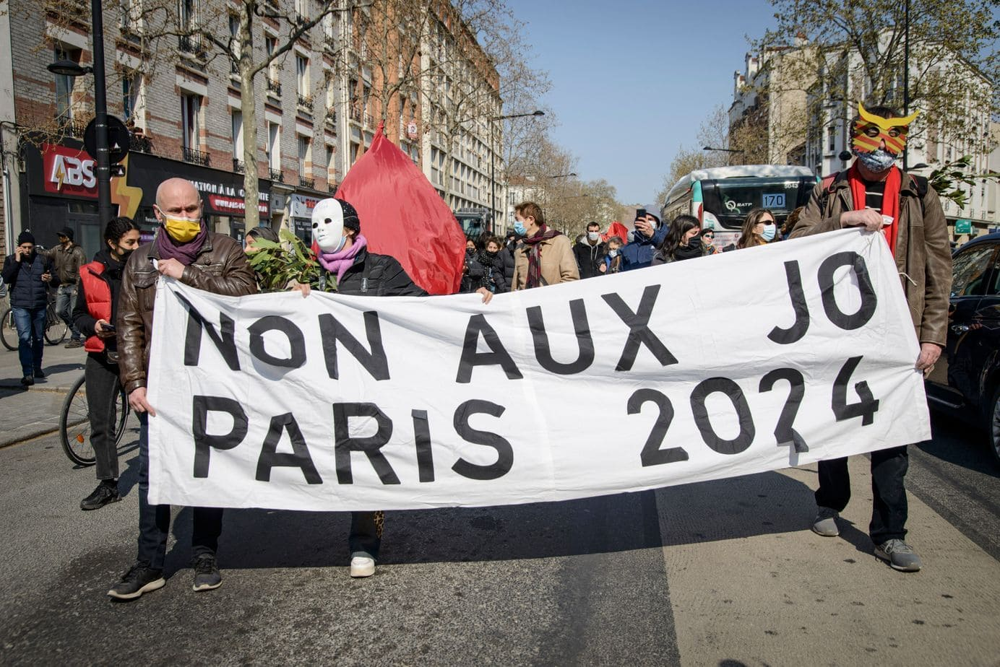
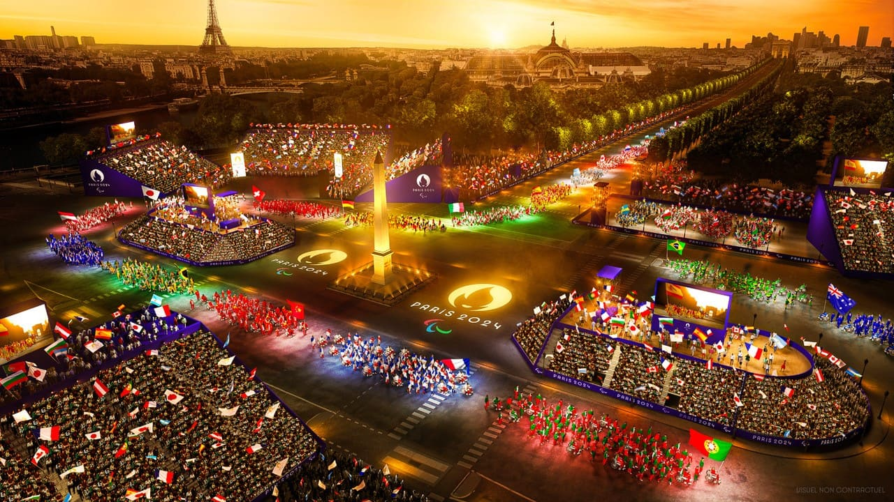
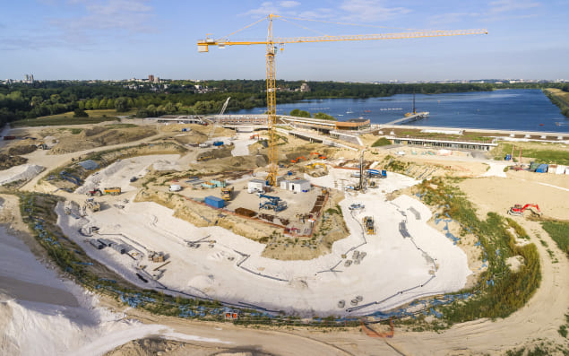

Traduire en français
Paris 2024
Home
Infrastructures
Transports Network
Sports
Sustainable achievements
Sustainable Future Transports
Impact on the population
On site
Annexes
Reluctance of the inhabitants
Environmental impact : Fears related to the destruction of natural spaces or pollution due to projects that will be realized.
Increase in the cost of living : Risks of higher taxes, rents or local prices impacting household budgets.
Disturbance during construction : Noise, traffic jams and discomfort to residents during the construction phase.

Benefits highlighted by elected representatives
Improvement of local infrastructure : Development or renovation of roads, public spaces and urban facilities.
Job creation : Short and long-term economic opportunities through project activities.
Strengthening the attractiveness of the territory : Increase in tourism or economic investment in the region.
Ecological transition and modernization : Promoting sustainable solutions and innovations for a more environmentally friendly way of life.
 
The ground of the Olympic Games nautical stadium in Vaires-sur-Marne under construction